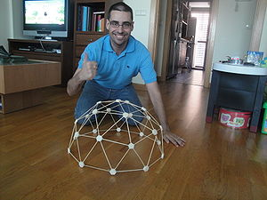
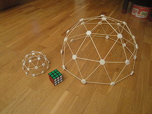
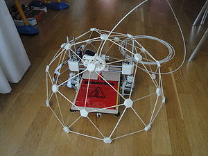
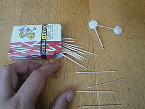
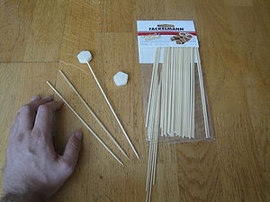

| Mini-domo en Thingiverse |
|---|


Contenido
[ocultar]Introducción
Conectores parametrizados para construir domos (cúpulas geodésicas). Están basados en los conectores hechos por Effalo. Los he parametrizado y usado para construir domos de pequeña escala usando palillos de dientes o palos de brochetas que son muy baratos y se encuentran en cualquier supermercado. La idea original de usar palos de brochetas es de Cole (Juan Manuel Amuedo).
Motivación
He hecho estos conectores para aprender a construir cúpulas geodésicas y construir un domo de tamaño natural en la OSHWcon 2012.
Parámetros
El conector tiene estos parámetros. El tamaño del conector se calcula automáticamente a partir de ellos
- sd: (stick diameter). Diámetro del palo
- Holedepth: Profundidad del huco para meter el palo en el conector
Instrucciones
- Se necesitan las siguientes piezas impresas:
- 20 conectores hexagonales
- 6 conectores pentagonales
Antes de imprimirlos crear los conectores con los diámetros de los palos a usar. Yo he creado dos de ejemplo: para palillos de dientes y de brocheta (de 2mm y 3mm de diámetro). Imprimir uno de prueba y comprobar que los palos entran bien. A veces es necesario retocar los taladros con una lima o un destornillador.
- Palos a Utilizar:
- 35 palos "largos"
- 30 palos "cortos"
El tamaño de los palos se calcula a partir de esta calculadora, introduciendo como parámetro el diámetro del domo (tipo de cúpula 2V):
http://simplydifferently.org/Geodesic_Dome_Notes?page=3#2V/L2
- Ejemplos
- Ejemplo 1: Micro-domo (15cm de diámetro)
- Palos "largos" de 46.3mm
- Palos "cortos" de 41mm
- Ejemplo 2: Mini-domo (50cm de diámetro)
- Palos "largos" de 155mm
- Palos "cortos" de 137mm
- Ejemplo 1: Micro-domo (15cm de diámetro)
- Conexión de los palos:
- Los palos "largos" se conectan en los agujeros de las piezas hexagonales que están apuntados por la "X"
- El resto de agujeros se conectan los cortos
- En las pentagonales sólo se conectan los cortos
- La piezas pentagonales tienen un círculo en la parte superior para indicar la cara que apunta hacia el exterior de la cúpula.
Descarga
| Mini-dome-hexa.scad | Conector hexagonal. Fuentes en OpenScad |
| Mini-dome-penta.scad | Conector pentagonal. Fuentes en OpenScad |
| Micro-dome-hexa.stl | Fichero STL. Micro-domo. Conector hexagonal |
| Micro-dome-penta.stl | Fichero STL. Micro-domo. Conector pentagonal |
| Mini-dome-hexa.stl | Fichero STL. Mini-domo. Conector hexagonal |
| Mini-dome-penta.stl | Fichero STL. Mini-domo. Conector pentagonal |
Fotos
| Álbum de fotos completo |
|---|
|  (click para ampliar) |
 (click para ampliar) |
|  (click para ampliar) |
 (click para ampliar) |


Repositorio
- Repositorio SVN: http://svn.iearobotics.com/3D_objects/Mini-dome/
Autor
Créditos
- Effalo es el autor de las piezas de las que he derivado estas
- Cole (Juan Manuel Amuedo) tuvo la idea original de usar palos de brochetas para los domos
Licencia
| |
Enlaces
Noticias
- 15/Julio/2012: Primera versión de esta página